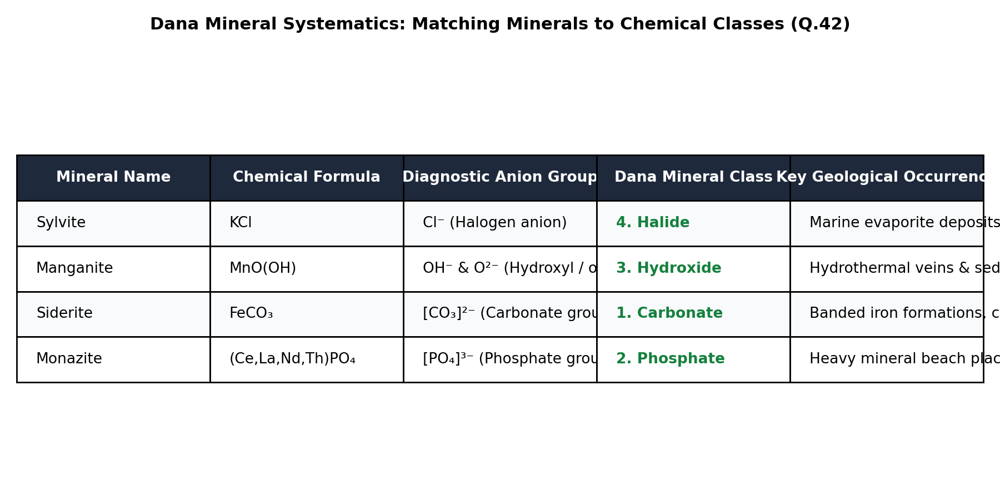
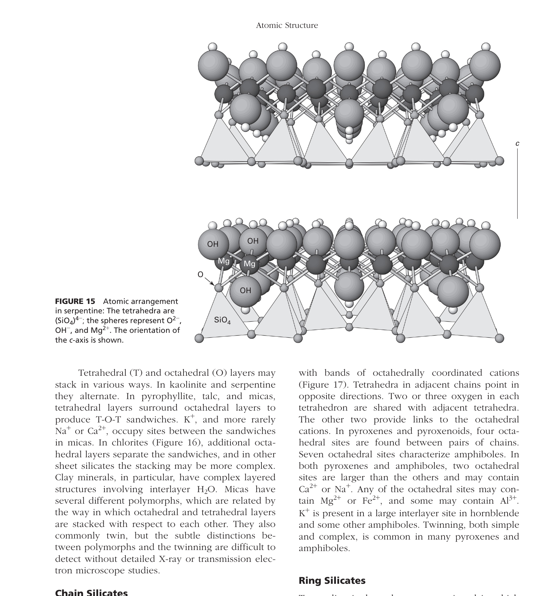
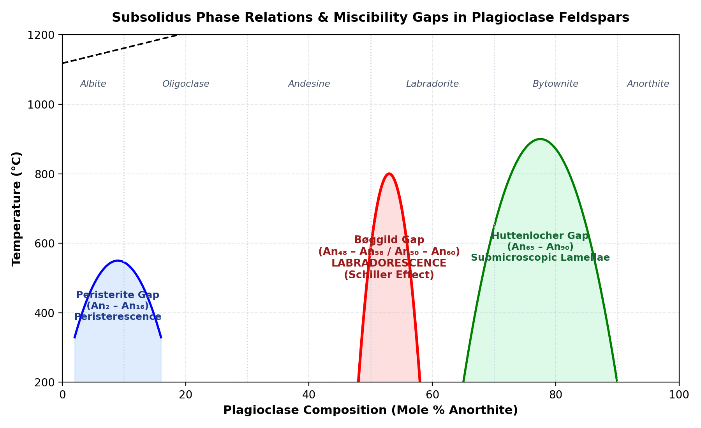

See oe ee Minerals & 3 ee SESE DE STE 3.1, INTRODUCTION A “mineral” is a naturally occurring homogeneous substance which has a more or less definite chemical composition and definite atomic structure. The minerals ure usually formed by inorganic processes. They possess a set of constant physical properties. Since the determination of atomic structure and chemical composition requires complex laboratory tests, the more easily recognized physical properties are used in the identification of minerals in the field, > The minerals may be divided into two broad groups: (#) rock-forming minerals, and (ii) reforming minerals. “Rock-forming minerals” are those which are found in abundance in the rocks of the earth’s crust. “Oreforming minerals” are those which arc of economic value and which do not occur in abundance in rocks, “Table 3.1. Mineral Groups lL: Oxides =| Quartz, Magnetite, Hematite, Limonite etc, 2;.
Silicates Felspars, Mica, Hornblende, Augite, Olivines etc, Carbonates Calcite, Dolomite, Siderite etc. Sulfides Pyrites, Galena, Sphalerite etc.
i Sulfates Gypsum etc Chiorites Rocksalt etc, - PRINCIPLES OF ENGINEERING Ggoi¢:: known to exist but most of them Over 2000 mineras Sit rocks are small in number. Th se minerals which occur in © i j 4 Y are ah 29, It is also interesting to note that only cight elements compose the § of these minerals and about 98% of the continental crust, These ¢ clements are oxygen, silicon, aluminium, on, calcium, potassium, sodiy and magnesium. Out of these, WO most abundant elements are silicon oxygen which combine to form the mineral group known as the “silie The minerals which occur in common rocks can be divided into six gy as shown in Table 3.1. q.
3.2, PHYSICAL PROPERTIES a ‘The physical properties of minerals can be determined readily b section or by simple tests. Because the physical properties are deter in hand specimens, they are important in the recognition of minerals j field. The chief physical properties are colour, streak, lustre, hardness, cleavage, fracture, odor, feel, tenacity, fluorescence, phosphorescence, 1 netism, specific gravity and crystal forms. Crystal forms are describe detail in Chapter 4. 4 ‘The correct identification of minerals is made with the help of a pol ing microscope. This involves grinding the minerals or rocks into ver slices and allowing polarized light to pass through them. In this vay optical properties arc studied and the minerals are identified. O minerals, such as ores, are studied under the ore-microscope in the refl light. The optical properties of minerals are discussed in ‘the later part Chapter. +
3.2.1 Colour
Colour of a mineral is due to absorption of certain wave lengths by atoms making up the crystal. The remaining wave lengths of wh that are not absorbed give rise to the colour scen by the observer. 10 coloured minerals absorb most of the light whereas red minerals rel transmit mainly the red light and absorb all others. 3 Some minerals possess characteristic and fairly constant colou example, the lcad-grey of galena, brass-yellow of pyrite and gf chlorite. But in other cases, such as quartz, the colour is variable af not be relied on as a guide to identify minerals.
. to joe of ul amounts of impurities can give a varicly of ee colourless mineral. For example, the colour of am “quartz is due to the presence of titanium or manganese 1) TY most common coloring impurity is hematite. It imparts red colOr & minerals including some felspar, calcite and jasper. g ges gone eras when viewed in differen directions show ae is applied wo peal ety play of colour”. The term “OPE show milky appearance, for ext When bands of prismatic colours are seen on the surface of a mineral, it is said to show “iridescence”.
3.2.2 Streak
The colour of the mineral powder is called “streak”. It is more consistent and reliable than the body colour of the mineral. The streak is obtained by rubbing 2 mineral against an unglazed porcelain plate, called the “streak plate”. The study of streak is most useful in case of coloured minerals which often give 4 much lighter streak than their body colour. For example, hematite which appears almost black, gives a red coloured streak. However the streak is less useful for identifying most of the silicates, carbonates, and transparent minerals because they give while streak. 3.2,3. Lustre Lustre is a very characlerstic and useful property of minerals. It is a measure of the reflectivity of the mineral surface. The “lustre” may be defined as the general appearance of a mineral surface in reflected light. The various types of lustre are as follows.
1. Metallic Lustre, Minerals which have the appearance of a metal, are said to have a “metallic lustre”, e.g. pyrite and galena.
2. Submetallic Lustre. The feebly displayed metallic lustre is called the “submetallic lustre”, e.g. chromite and hematite. 3, Adamantine Lustre. A hard brilliant lustre like that of a diamond, is called “adamantine lustre”. It is due to the minéral’s high index of refraction, e.g. transparent cerussite.
4. Vitreous Lustre. It is the lustre exhibited by the broken glass, e.g. quartz.
5. Pearly Lustre. It is the lustre exhibited by the pearls, e.g. muscovite, tale and calcite.
6. Silky Lustre. It is the lustre exhibited by the silk fibres. Minerals which crystallize in fibrous habit commonly show silky lustre, ¢.g. asbestos and fibrous gypsum. ‘ 7. Resinous Lustre. It is the lustre exhibited by the resin, e.g. sphalerite.
8. Greasy Lustre. It is the lustre exhibited by the grease, ¢.g. tale and nepheline. fe;
9. Dull or Earthy Lustre. Minerals showing no lustre are said to Possess dull or earthy lustre, e.g. kaolin.
3.2.4 Hardness,
lite jiitoess is one of the most useful diagnostic properties of a mineral. flit ined as the resistance of a mineral to abrasion or scratching, Hardness ermined by rubbing a mineral of unknown hardness against one of 4 PRINCIPLES OF ENGINEERING GEOig known hardness. A numerical value is obtained by using the “Mohs of hardness" (Table 3.2). In this scale there are ten minerals whi h g arranged in the order of their increasing hardness. 4 4 Table 3.2. Mohs Scale of Hardness 4 ¢ Harness | Mineral Remark 4 1 | Tale Scratched by a finger nail, 2 Gypsum di 3 Calcite.
4 Fluorite Scratched by a knife.: Ss Apatite | a 6 Orthoclase e cl ‘foul 6 | coe } Scarcely scratched by a knife. 8 Topaz a 9 Corundum INot scratched by a knife. y 10 | Diamond a In the absence of hardness testing minerals, the following materials in a be used to determine approximate hardness. (i) A finger nail will scratel hu to about 2.5 (i.e. not calcite). (ii) A window glass will scratch up to abot (ie. not felspar). (iti) A penknife will scratch up to about 6.5 (i.e, not qua “Habit” of a mineral may be defined as the size and shape oft crystals, and the structure or form shown by the crystal aggregates am Cryplocrystalline masses. The chief habits shown by minerals are as to cy 1. Accicular. Minerals showing needle like crystals, for exa pl natrolite (Fig, 3.1 (g)). hi, 2. Fibrous, Minerals showing an aggregate of long thin fibres, 10 example, asbestos and Salinspar..
_ 3: Foliuted. Minerals with platy habit commonly occur as Foliate aggregates containing thin separable sheets, for example, ™ covite and biotite [Fig. 3.2 (b)) 3 4. Bladed. Minerals showing bladed habit occur us small kil blades, for example, kyanite [Fig. 3.1 (d)]. a; 5. Tabular. Minerals showing broad flat surfaces, for examp! felspar [Fig. 3.] (a)). x 6, Columnar, Minerals showin for exam i * tourmaline [Fig. 3.1 (c)}. The term “‘stalactitic” refers to colul fornis of minerals, such as calcite and aragonite.
MINERALS ae 95 5 SZ Ga ED ¢ sash, SoH, ero erstyan CTS) ASSET my & ba *
7. Botryoidal. Minerals showing aggregate of rounded inasses resembling bunch of grapes, e.g. chalcedony [Fig. 3./ (e)].
8. Reniform. Minerals showing kidney shaped form, e.g. kidneyiron-ore, 9. Granular. Minerals which occur as aggregate of equidimensional grains, for example chromite [Fig. 3.] (1.
10. Pisolitic. Minerals which occur as aggregate of rounded grains of a pea size, for example bauxite. 11, Oolitic, Minerals showing an aggregate of bodies resembling fish toe. In this case the rounded grains are of the size of a small Pinhead.
12. Massive. When noncrystalline or cryptocrystalline minerals occur as structureless mass, their habit is described as “massive”. for example, flint.
3.2.6 Cleavage
fi Ifa mineral breaks along a flat plane, it is said to possess a cleavage, a breaks with an irregular surface, it is said to show a fracture. Thus the wither may be defined as the tendency of a mineral to break more easily pis pot aurlaces along planes of weak bonding. Hence cleavage is the Deke 'Y Which is related to the atomic arrangement within the mineral. aa me the cleavage always occurs parallel to a possible crystal face, it is 7 eked in terms of the crystal face to which it lies parallel, such as cubic, al, Prismatic, basal-and so on. For example, galena has cubic’ 5 PRINCIPLES OF ENGINEERING GEQLog, mica has basal ch a cleavage, fluorite has octahedral cleavage leavage calcite has rhombohedral cleavage Depending on the ease with which @ crystal saver es the perf ti of the eurfuce obtained, the cleavage is classified as ‘perfect”, “gage “poor” and “indistinct”. Examples of minerals which show perfect cleave Zz mica, galena, calcite and fluorite. Quartz, has no cleavage al all. 3.2.7, Fracture: Minerals which do not exhibit cleavage, break with an irregular surf; The nature of this broken surface is called “fracture”. In case of fracty the breaking should be in any other direction than the cleavage. Uniij cleavage, the fracture do not produce smooth surfaces. The common tyj of fracture are as follows. P 1. Conchoidal Fracture. It is a curved friicture surface shov concentric lines like a shell. Quartz and glass show conchoi fracture. j 2. Even Fracture. It is a fracture surface which is almost flat. FI shows even fracture. 4 3. Uneven Fracture. It is a fracture surface which is irregular rough. A large number of minerals show uneven fracture. — 4. Hackly Fracture. It is a fracture surface which is rough sharp and jagged points. Native metals show hackly fracture Some minerals give a characteristic smell when rubber, breathed or heated. The chief types of odor are as follows: ‘ 1. Arsenical. The arsenical odor is like the odor of garlic. Orpl and other arsenic minerals give arsenical odor. q %, Sulfurous, This odor is like the odor of burning sulfur. Pj gives sulfurous odor. 4 3, Argillaceaus. This odor is like the odor of clay. Kaolin § argillaceous odor. 7: Feel is the sensation upon touching or handling minerals. The dif 4 tyres of feel are “greasy”, * ” a re “greasy”, “soapy”, “rough” and “harsh”. The eX of greasy feel is talc, that of i: gh bauxite, g soapy feel is kaolin and that of rough”
3.2.10 Tenacity 4
Tenacity of mineral de r ae: notes co Tenacity is classified as follows, tie agen or chasing 4 mallet THs which may be cut with knife but slices:
2. Malleable. Minerals which flatten under the hammer.
3. Flexible. Minerals which may be bent.
4. Elastic. Minerals which spring back after bending.
5. Brittle. Minerals which break easily. Brittle is the opposite ot tough. 6, Friable. Minerals which crumble easily.
7. Pulverulent. Minerals which are powdery and have little or no cohesion, e.g. clay or chalk.
3.2.11 Fluorescence
Some minerals when exposed in sunlight or ultraviolet light, produce-a colour quite different from their own. Thus green or colourless fluorite shows a bluc or purple colour in ultraviolet light. This property of minerals is called “fluorescence”. The other minerals which often show fluorescence are calcite and scheelite.
3.2.12 Phosphorescence
Some minerals glow and emit light when they are placed in ultraviolet fight or certain other electrical radiation. The glow induced in the mineral may continue for a few seconds or minutes after the removal of the cause.: This property of minerals is called “phosphorescence”. The examples of minerals which show phosphorescence are diamond and sphalerite.
3.2.13 Magnetism.
A few minerals are attracted by a magnet. Of these minerals magnetite and Pymhotite are the most common examples. The magnetite that possesses attracting power and polarity is called “lodestone”.
3.3 Specific Gravity
“Specific gravity” is. a number which represents the ratio of the weight ofa mineral to the weight of an equal volume of water. Thus a mineral with ‘al Bravily 4.0 is four times as heavy as water. The specific gravity of ean Silicate minerals is about 2,65 and those of ore minerals varies i ‘i 45 to 10,0. A rough estimate about the specific gravity of minerals ‘an be made by hefting them in our hand.
33.1, Determination of Specific Gravity anette ae methods of determining specific gravity of solids are weight of ie fact that the loss in weight of a body immersed in water, is the air and an equal volume of water, If WV, is the weight of the mineral in Wz its weight in water, its specific gravity will be as under, Specific Gravity = Wi SOA ickniShesteesame ieee o PRINCIPLES OF ENGINEERING GEG 98 aaah Teak ie vg Steel Yard. Walker's steel yard is an instrument which Walker’s Steel bili t the specific gravity of comparatively fq mainly used foe SP aaranent consists of a graduated long hori 20 mineral Teh is supported near one end ona knife edge as shown pea al of the longer arm, a vertical post is placed lt bear
specimen. This will disturb the balance. The specimen is then moved away from the ce fulcrusn unitly the beam again comes op- [| a Posite the index mark. Les us assume that the Lp 4 new reading is now ‘b'. The specific gravity of the mineral is calculated as follows, 4 “7 Specific Gravity = 2 smADUsTED b-a MIRROR.
; Itmay be noted that there is a “counter l INS weight” on the shorter arm. This weight can O fay be sili from one notch to another on this ay am. but it must remain in the same notch [S) oa during any one experiment, co= SY Jolly’s Spring Balance. The specific Bravily of small fragments of a mineral is a determined by the Jolly’s spring balance. The _ oa instrument consists of a weak spring D a Suspended vertically against a graduated om mnurror scale. Two pans, one below the other Fig. 3.3.Jolly's spring Dalal as shown in Fig. 3.3, are attached to the lower end of the spring. The lower ‘pan is always immersed in water. The initial reading “a” of the pointer on the scale is taken without putting anything on the pans. A stall piece of mineral whose specific gravity is to be determined, is placed on the upper pan and the second reading “” is taken. The specimen is then transferred to the lower pan and the third reading “c” is noted, The specific gravity of He mineral is determined as follows.
Specific Gravity = ay 3.4, CHEMICAL PROPERTIES OF MINERALS Each mineral has a crystalline structure and almost a definite chemical composition. The properties which are related directly to the chemical composition of minerals are isomorphism, polymorphism and pseudomorphisin.
3.4.1 Isomorphism
When variations in chemical composition take place in any one mincrai structure, the phenomena is called “isomorphism”. A group of minerals, related in this manner form an “isomorphus series”. These minerals show a continuous variation in their chemical composition bul their crystal structure remains almost the sare. The plagioclase felspars which are a group of triclinic minerals, provide an example of isomorphism. In these minerals there is the continuous substitution of (Na + Si**) for (Ca” + AP) from anorthite, CaAL,Si,O,, to albite, Na Al SijOp,
3.4.2 Polymorphism
fi, The ability of a specific chemical compound to crystallize with’ more an one type of structure, is known as “polymorphism”. In this case, each crystal form-gives rise (o a separate mineral species. Such minerals which ae identical chemical composition but different atomic structure are called teens. For example, polymorphs of carbon are graphite and ‘ond, and of Ca Co, are calcite and aragonite.
3.4.3 Pseudomorphism
bes Menomena the outward fonn of another mineral species, formed when one cued “psendomorphism". Mineral pseudomorph ane OULeT Fort Of the eS Feplaced by another without any change in the structure of a the sualcal mineral. Thus the chemical composition and crystal fon lomorph belongs to one mineral species whereas the it a piece of pe le ‘o another. A common example of pseudomorph Another example nod here Wood fibres have been replaced by silica, 35. SILIC ple is quartz (SiO,) afier fluorite (CaF,), ES ATE MINERAL STRUCTURES he silicate minerg meneraen About SO OF the oxen OUP is of great importance because they constitute i: crust, They are found in all the common rogks ‘oo PRINCIPLES OF ENGINEERING Gq 3 - q MINE except limestones. In order t0 understand the differences between m: silicate mineral groups. itis necessary tO study their structure. Evary sili¢ mineral comains Oxygen and silicon, and all except quartz, contain more additional elements (0 complete their structure. a The basic unit in al] silicate =z minerals is the “silicon ~ oxygen *; tetrahedron”. This structure iscom- ¢ RY a posed of four oxygen atoms with the *. 4 ele 7 silicon atom at its centre (Fig. 3.4). Fach a, / These tetrahedra can occur in the sili- i y b cate structures either as single units “Neat.
or joined into chains, sheets and three 7 dimensional networks by sharing Cy @ oxygen atoms. Depending upon the — Fig, 3.4. (a) TI i f type of structure built by these Fae A ee ena tetrahedra, the silicates are classified and dark one represents a silicon A into the following groups. (6) Diagramatic representation of 1. Neosilicates. Neosilicates SiGyecelodery ye include those minerals oP which ate built up fromiso-. Pex af” lated SiO, tetrahedra (Fig. A 3.4). The atomic packing of X the neosilfcate siucture is \> <i Fenerally dense which 4 eS « sauesThsininerals of an Causes the minerals of this 5 group to have relatively 3 high specific gre gravity and lardness. The crystal habit A 7 A OF ZB of these minerals is gene- Y/ 5 Ni 4 rally cquidimensional and; they have ponr cleavage € Olivine ((MgFe), SiO, ain, 1 conZSiOvanigamasae J JAN x, “a examples of this class, <—S as [a=: inten YG ates are characterized b:.
linked pairs of SiO, DX LN letra. es {oF oxygen is shan only one \ f: morphine Zo Hemi- 2 i (OW WO eo? caw (a) Double te of this clas isan example Stucture, (b) Ring structure; (©) 5 chain structure. (4) Double § RALS 101 3, Cyclosilicates (Ring Silicates). The cyclosilicates contain rings of linked SiO, tetrahedra having a ratio of Si: O = 1:4 These rings may consist of groups of three, four or six linked tetrahedra
5. Phyllosilicates (Sheet Silicates). The phyllosilicates form sheet structures in which there is the continuous linking > —< of hexagonal groups of silica tetrahedra (Fig. == 7 3.6). In this structure N\ = three of the four oxygens Z are shared with neigh- <| a a ralio of Si: O= 2:5, | p< [Ss AS the atomic bonding NL ym Structure is generally Weak, these minerals spilt Fig. 3.6. Sheet structure. easily into thin sheets.
Flaky minerals, such as micas, chlorite and kaolinite are the ex. amples of this class.: ". Tectosiicates (Framework Silicates). In tcctosilicates SiO, ic agit est in three dimensional framework. All oxygens This wes tetrahedron are shared with neighboring tetrahedra. S120 | pees Strongly bonded structure in which the ratio of possess unio, The minerals belonging to tectosilicate group examples thee throughout, Quartz and felspars are the PTET EE CIPLES OF ENGINE 102 PRIN ERING GEQI9 3.6. COMMON MINERALS 4 4 Silicate minerals are by far the most common rock-forming mineral They constitute about 95% of the earth's crust. The important sitjeg minerals are felspars, (elspathoids, quartz, pyroxenes, amphiboles, mi and olivines. The other minerals which are described here are gare chlorite, serpentine, aluminium silicates, calcium minerals and some 9 minerals.
3.6.1 Felspar Group 4
‘The felspars are the most abundant of all minerals, They fall into t main series: (() K-Na felspars, called the “afkalt felspars”, and (ii) CaN felspars, called the “plagioclase felspars”. Ss All felspars show closely related physical properties. Cleavage - go in two directions at an anyle of 90° (approximately). H — 6. Sp.gr — 28 = 2.63. Lustre ~ Vitreous, Colour - white, grey, pink or green. Habit generally tabular. Use — in the manufacture of porcelain. Re K-Felspars. The important members of this group are “orthoclase; aD “microcline”. Fach of these has the composition KAISiyOg but orthoel: crystallizes in the orthorhombic system and microcline in the triclinic s tein, Potash felspars alter readily into clay minerals, especially “kaolinite Plagioclase Felspars. The plagioclase felspars form a complete sol uti scrips from pure “albite", NaAlSi;O, to pure “anorthite”, CaAl,Si,Og| (F i 1.7). The important intermediate members are “oligoclase”, “andesine OLIGOLLASE LABRADoRITE AMOR THITE ALaTE ARDECINE BYTOWMITE 4 And ania Anto An So Ando Ango AW 10?
Abloo AbQD abo Abse Ab 30 Abio: Abe Me—S0DA PLAGIDCLASE——+1¢— LIME PLAGIOCLASE——~! Fig, 3.7. Plagioclase felspar series. Ab—Alhite, An—Anorthite- 4 “labradorite” and “bytownite”. The plagioclase felspars crystallize in triclinic system and are distinguished from K-felspars by the presence? repeated albite win striations visible on cleavage surfaces. The propel™ of the various members of the plagioclase series vary in a uniform mam with the change in the chemical composition. The plagioclase felspars! ‘: ly alter to clay minerals or “sericite” (fine grained micaceous material) Occurrence. (i) The alkali felspars which include orthocl® microcline and albite, have a similar occurrence. They are commonly fe in igneous rocks, such as granites, pegmatites, syenites, rhyolites trachytes. (if) Oligoclase is commonly found in granodiorites and 1° zonites. (if) Labradorite is a common constituent of gabbros, basalts and anorthosites.
3.6.2 Felspathoid Group
‘The felspathoids are anhydrous framework silicates. They contain less silica than felspars. The important members of this group are nepheline, Ieucite and sodalite.
Nephaline: (Na, K) AISiO, Crystal system — hexagonal. Cleavage - poor. H - 6. Sp. gr.— 2.60 2.63. Lustre — vitreous to greasy. Colour — colourless, white, gray or yellowish. Habit — massive. Occurrence — mostly in nepheline s: enifes. Mi PI yt Use - in the manufacture of glass and ceramics.
Leucite; KAISI,0, Crystal system—cubic (above 625°C) and tetragonal (below 625°C). Cleavage—very poor. 5-6, Sp. gr-2.47-2.50, Lustre-vitreous. Colourwhite to grey. Habit-trapezohedral crystals. Occurrence-in volcanic rocks only, Sodalite: Nag (AISiO.), Clr ‘ Crystal system — eubie. Cleavage — poor. H- 31-6, Sp. gr ~ 2.15 2.3. Lustre — vitreous. Colour — usually blue, also white, gray, green. Habit —commonly massive. Occurrence — with nepheline in nepheline syenites.
3.6.3 Silica Group
Quartz: SiO, Crystal system — hexagonal. Cleavage — absent. H ~17. Sp. gr. - 2.65. Fracure ~ conchoidal. Lustre ~ vitreous. Colour ~ colourless, white or with a wide range of tints. Habit — prismatic crystals or massive. The important varieties of quartz are: (i) “Rock crystal” — Colourless quartz, commonly in distinct crystals. (ji) “Amerhyst” — Transparent quartz, with purple colour. (ii) “Smoky quartz” — Colour in shades of grey oF brown. (iv) "Rose quartz" ~ Colour a red-rose or pink. (v) “Milky quart:" ~ Colour. ae white. Cryptocrystalline forms of quartz are: (a) “Chalcedony” — a dase and botryoidal from. (b) “Agate” — A banded variety with layers oie at Icedony having different colours. (c) “Jasper” — Red chalcedony Lane peaales (d) “Flint” — Dark gray siliceous nodules. (e) “Chert™ Fee sia oo quartz. (f) “Opal” - An-amorphous variety of ie Quartz occurs in most igneous, metamorphic and catiel oe, rocks. Some sandstones and quartzites are composed almost cake ve quartz. Tt is also found abundantly as a gangue mineral in mineral » Agate occurs in volcanic lavas as cavity tilling.
wis: ae eerste eM 104 PRINCIPLES OF ENGINEERING GEoig Uses: Coloured varieties are used as semiprecious stone, a (ji) In the form of sand it is used as construction material. 4 (iii) Quartz is used as a flux or abrasive in industries.
(iv) Quartz crystals are used as oscillators in electrical equipments, sug as watches. "i
3.6.4 Pyroxene Group.
Pyroxenes form an important group of rockfonming minerals. They ha a general formula X,Si,O, in which X is usually Mg. Fe, Al, Ca, or N Some aluminium may, partly replace silicon. The common pyroxenes Ca, Mg and Fe silicates. They are characterized by Wo cleavages whi intersect almost at right angles. Pyroxenes are broadly divided into groups: (j) ortho-pyroxenes, and (fi) clino-pyroxenes..
Orthopyroxenes. These pyroxenes crystallize in the orthorhot nb ic tem and contain very little calcium. The “enstatite” (MgSiO,) and “by ‘sphene” [(Mg, Fe) SiO,)] belong to this g -up. a Clinopyroxenes: These pyroxenes crystallize in the monoclinic sy and contain either calcium or Na, Al, Fe (ferric) or Li. “Diopside”, “hed bergite” and “augite” are the important members of this group. Enstatite: MgSiO, = Hypersthene + (Mg, Fe) SiO; E Crystal System — orthorhombic. Cleavage — good. H - 51-6, Sp. 3,2-3.6. Lustre — vitreous. Colour - grayish, yellowish or greenish. 4 — massive or lamellar.
Occurrence. Magnesium rich orthopyroxenes are a common stituents of peridotites, gabbros, norites and basalts. They are fours socialed with augite, olivine and plagioclase. The orthopyroxenes serpentinous products or fibrous amphibole. 7 Diopside: CaMgSi,O, Hedenbergite: CaFeSi,O, Augite: (Ca, Na) (Mg, Fe, Al) (AL, Siz, Oe Crystal System — monoclinic. Cleavage ~ at 87° and 93°, imps H- 5-4, Sp. gr. = 32-33. Lustre — vitreous. Colour = white to light in diopside, deepens with increase of iron. Augite is black. # crystals show square or eight-sided cross-section. Also granular and lamellar.
Occurrence. Diopside and hedenbergite occur in metamorphié Augite occurs in gabbros, basalts, diorites and some syemiles-
3.6.5 Amphibole Group: "
‘The amphibole group includes a number of minerals which have a closely related structure and cheinical composition. The amphiboles contain hydroxyl groups in the structure. The angle between two sets of cleavages ic 124° and is characteristic of amphiboles. “Tremolite” (hydrous silicate of Ca and Mg), “actinolite” (hydrous silicate of Ca, Mg and Fe) and “hornblende” (hydrous silicate of Na, Ca, Fe and Al) are the important meinbers of amphibole group.
Tremolite + Ca;MgsSigO22 (OH), Actinolite + Ca,(Mgy Fe)s SigQ22 (OH), Crystal System ~ monoclinic. Cleavage - perfect. H ~ 5-6. Sp. gr. — 3.0-3.3. Lustre - vitreous oF silky. Colour — white or gray in tremolite and preen in actinolite. Habit — tremolite is often bladed and sometimes in silky [ibres. Actinolite is often in radiating aggregate. Also fibrous.
Occurrence. These minerals are commonly found in metamorphic rocks. Tremolite occurs in metamorphosed dolomitic limestones and actinolite is a characteristic mineral of the greenschist facies of metamorphism.
Uses. The fibrous varieties are used as asbestos. Hornblende: (Ca, Na);_5 (Mg, Fe, Al)s Sig (SIAD2 O22 (OH), Crystal System — monoclinic. Cleavage — good prismatic. H-5-6. Sp. gr 3.0-3.4. Lustre - vitreous. Colour — dark green to black. Habit crystals with six sided cross-section, also massive or granular.
Occurrence. Horblede is an important rock-forming mineral. It occurs commonly in syenites and diorites. It is a major mineral of amphibolites.
3.6.6 Mica Group
There are two common varieties of mica: (é) “muscovite” which is rich in aluminium, and (ii) “biotite” which is rich in iron and magnesium. The physical properties of both the micas are similar. They crystallize in the monoclinic system and have one perfect basal cleavage. They occur in foliated form and the mineral can be split into thin elastic sheets.. Muscovite: KAI; (AISi;O49) (OH); Crystal System — monoclinic. Cleavage — perfect basal. H ~ 2-21, Sp. a = 2.76 - 2.88. Lusire — pearly or silky. Colour — colourless, pale, shade green and brown. Transparent in thin sheets. Habit - usually tabular crystals, foliated.
Occurrence. Muscovite is a characteristic mineral of granites and granite-pegmatite. In pegmatites large crystals of muscovite are found. Muscovite is also common in schists and gneisses.
sion Muscovite is widely used for insulation as adielectric in electrical lustry. Ground mica is used as a filler, Muscovite is also used for heat resistant supports and windows.
PRINCIPLES OF ENGINEERING GEO on Biotite: K(MgaFe); (AISi, 0) (OH); 5 Crystal System - monoclinic. Cleavage - perfect basal. H — 21 V2 Sp. er. _2.8-3.2. Lustre — pearly or splendent. Colour —dark green, broy Pay Habit - usually in irregular foliated masses:: az Occurrence. Biotite is found in granites, syenites, mica-lamprophy rn gneisses and schists.:
3.6.7 Olivine Group 4
This group includes a series of minerals that crystallize in the o1 th rhombic system. These minerals range in composition from “forsterite Me.SiO, to “fayalite”, Fe SiO,. The composition of common olivine (Mg, Fe); SiO.. g Olivine: (Mg, Fe), SiO, Crystal System - orthorhombic. Fracture — conchoidal. H — 6V2Sp. gr. = 3.274.317, Lustre - vitreous. Colour — pale, yellow green or olis green. Habit — granular.
Occurrence. Olivine occurs mainly in the dark coloured igneous rock such as gabbro, peridotite and basalt. The rock, dunite is made up alm wholly of olivine, Olivine alters very readily to serpentine. 4 3.6.8, Garnet Group a ‘The garnets comprise a group of isomorphus minerals with the gener formula X;Y> (SiO.);, where x may be Ca, Mg, Mn or Fe** and Y may b Al, Cr” or Fe"*. The common ‘garnets are: (#) “Pyrope”, MgsAl,Sij0j2 ( “Almandite”, Fe,Al;SiO,,, (iii) “Spessartite”, MnjAl,Sij0,. and “Grossularite", Ca,Al,Si,O,>. ¥ Crystal System - cubic. Cleavage-absent. Fracture — uneven. H 6V2-T2. Sp. gr. 3.54.3. Lustre — vitreous to resinous. Colour - varyitl with composition, Most commonly red, also brown, yellow or greé Streak ~ white. Habit - dodecahedral crystals common, also granulate Occurrence. Gamets occur abundantly in some.metamorphic ck such as mica-schists, hornblende — schists, and gneisses. They also occur an accessory mineral in some igneous rocks, a Uses. Transparent varieties are used us gem stones. Gamets are als used as an abrasive, y 3.69. Chlorite Group 4 ae chlorite group includes a number of minerals which have simile Properties. The important mineral of this group is “chlorite”. Chlorite: (Mg, Fe,AD, (Al, Si), Oy (ORD,.
Crystal System — monoclinic. Cleavage — perfect basal. H - 2-242. Sp. p- 2.63.3. Lustre - vitreous, resinous or dull. Colour — green of various ar des. Habit ~ usually foliated masses.
Occurrence. Chlorite is a common mineral in low grade metamorphic rocks, such as chlorite-schists. In igneous rocks it occurs as an alteration product of pyroxenes, amphiboles and biotite.
3.6.10 Serpentine Group
Serpentine occurs in two distinct forms.; (i) “Antigorite", a platy variety, and (ii) “Chrysotile”, a fibrous variety. Antigorite and Chrysotile: Mg,Si,Os (OH), Crystal System — monoclinic. Cleavage — basal in platy variety and none in fibrous crysotile. H— Variable 3-4. Sp. gr. 2.5-2.6. Lustre — Breasy in the massive varieties, silky in fibrous varieties. Colour - various shades of green, also brownish. Habit - lamellar, platy or fibrous (chrysotile).
Occurrence. Serpentine is usually formed by the alteration of magnesium silicates such as olivine, pyroxene and amphibole. It is found associated with magnesite, chromite and magnetite. Serpentinite is a rock which is made up mostly of the variety antigoritc. It is formed by the alteration of olivine bearing rocks.
Uses. Chrysotile variety of serpentine is the chicf source of asbestos. Asbestos products are used for fireproofing and as an insulation material against heat and electricity.
3.6.11 Clay Mineral Group
. Clays consist mainly of a group of crystalline substances known as the clay minerals”. They are all essentially hydrous aluminum silicates. Kaolinite: Al,Si,0,(OH), i Crystal System — triclinic. Cleavage — perfect basal. H-2. Sp. gr. — 2.6. vusire ~ dull earthy. Colour - white, sometimes brown or gray. Streak — white. Habit — clay like masses.
er aomurrence: Kaolinite is a secondary mineral formed by the alteration ali felspars. It is the chief constituent of clay.
Uses. (i) Asa filler in paper. (i) In the manufacture of ceramics. Tale: Mg,Si,0,4(OH), System — monoclinic. Cleavage — perfect basal. H-1. Sp. gr witha oe = Pearly or greasy. Colour — white, gray, green or dark missive Hag ~ white. Habit — usually foliated masses. The compact and ‘variety is known as “sieatite” or “soapstone”. Feel — greasy. ee re atl 108 PRINCIPLES OF ENGINEERING Occurrence. Talc is 4 secondary mineral formed as a result of the alter: tion of olivine, pyroxene and amphibole. It is often derived from ultrabag igneous rocks. It is also found in some schists in association with actinolig Uses. (j) In talcum powder. (it) As filler in paint, paper and rubber, (ij In ceramics and electrical porcelain. F
3.6.12 AL,SiO, Group
‘The three important members of Al,SiOs group are (i) “Andalusi. (ii) “Sillimanite”, and (11) “Kyanite”. These minerals occur in metamoy phased luminous rocks, such as pelitic schists. E Andalusite: Al;SiOs Crystal System — orthorhombic, Cleavage — poor. Fracture — uneven H-11A. Sp. gr. ~ 3.16-3.20. Lustre — vitreous. Colour — flesh red, reddist brown or olive green. Habit ~ prismatic crystals.
Occurrence. Andalusite occurs typically in thermally metamorphose argillaceous schists and in regionally metamorphosed rocks formed di low pressure conditions, Uses. Andalusite is used in the manufacture of porcelains: of a high refractory nature. F Sillimanite: Al,SiO.
Crystal System - orthorhombic. Cleavage — perfect (O10). H - & Sp. gre 3.23, Lustre ~ vitreous. Colour — brown, pale, green or Wi it Habit - long slender crystals, often in parallel proups, frequently fi x Occurrence. Sillimanite occurs im schists and gneisses of high grat regional metamorphism.
Kyanite: ALSiO, ‘ Crystal System — triclinic. Cleavage ~ perfect (100). Hc1-5 ai Iength of crystals and 7 at right angles to this direction. Sp. 8 © a 3.66. Lustre — vitreous to pearly. Colour - usually blue to white, ulso gr ‘or green. Habit — crystals usually flat, bladed, also in bladed aggre Occurrence. Kyanite occurs in regional metamorphic schists and Bae ses together with garnet, staurolite, mica and quartz. q Uses. Kyanite is used in the manufacture of refractories.
3.6.13 Miscellaneous Minerals
Beryl: Be,Al,Si,Q,y iB Crystal System - hexagonal. Cleavage — poor. Fracture ~ conche 7 to uneven. H-8. Sp. gr. - 2.6-2.8, Lustre — vitreous. Colour — pale Bf bright green, bluish green, yellow or white. Habit ~ hexagonal Prat ‘ Occurrence. The crystals of beryl occurs in granites, pegmatites, pimtite-schists, gneisses and in pneumatolytic hydrothermal veins. Beryl crystals in some pegmatites grow to very large sizes.
Uses. Beryl is the ore of beryllium metal. Transparent varictics are used as gem stones. Staurolite: FeyAl,0,(Si0.), (0, OF): Crysial System ~ monoclinic. Cleavage ~ distinct. Fracture — uneven, H- 7-7. Sp. BF 3.65-3,75. Lustre — resinous to vitreous. Colour - red brown ta brownish black. Habit — prismatic crystals.
Occurrence. Staurolite is formed during regional metamorphism of aluminium rich rocks. It occurs commonly as porphyroblasts in schists and gneisses, offen jn association with garnet, kyanite and inica. ‘Tourmaline: Na(Mg, Fe), Als (BO), Sig Os, (OH), Crystal Systems ~ hexagonal. Cleavage ~ very poor. Fracture uneven. H-7-71A, Sp. gi 3.0-3.25. Lustre - vitreous to resinous. Colour - usually black, also brown, dark blue, colourless, pink, green and blue. Habit — prismatic crystals often with triangular cross-section, parallel or radiating crystal groups common.
Occurrence. Tourmaline occurs commonly in granite - pegmatites or in some granites which have undergone metasomatism by boron rich fluids.
Uses. The piezoelectric properties of tourmaline are utilized in the manufacture of pressure gauges. The coloured varieties are uscd as gem stones Topaz: ALSiO, (F, OH); Crystal System ~ orthorhombic. Cleavage — perfect basal. H-8. Sp. oe 3-36. Lustre — vitreous, Colour ~ colourless, yellow, pink, bluish, greenish, Habit ~ prismatic crystals, also granular.
Occurrence. Topaz. is found in cavities in granites, granite-pegmautes and high temperature veins, and in a few rhyolites. Topaz is usually associated with cassiterite, tourmaline, fluorite and muscavile.
Uses. Topaz is used us a gemstone.
3.6.14 Calcium Minerals
Calcite: CaCO, tt System — hexagonal. Cleavage - perfect. H-3. Sp. gr. ~ 2.71. mls e i Vitreous. Colour — usually white to colourless. Also gray, red, ue, yellow or brown. Habit - four common forms are tabular, bade sie rhombohedral and scalenohedral. Besides these fibrous, granular and stalactitic forms are also found.
10 PRINCIPLES OF ENGINEERING QEoLg; Occurrence. The origin of calcite may be igneous as in intrusive bonatites, sedimentary, such as limestone and metamorphic as in marble Calcite is commonly found in metallic ore veins and calcite veins are gj, found in various rocks. 2 Uses. The most important use of calcite is for the manufacture of cement and lime. Calcite is also used as a flux in the smelting of ores and as fertilizer. % Arugonite: CaCO,,: Crystal System - orthorhombic. Cleavage — distinct. Lustre — vitreay H-3Va-4. Sp. gr. = 2,95. Colour — colourless, white, pale yellow, gray rarely green or violet, Habit — prismatic crystals, also in tabular ¢ stalactitic forms.
Occurrence. Aragonite is much Jess common than calcite. Iis the main component of shells of may organisms. Aragonite occurs in some sedime tary deposits. 4 Dolomite: CaMg(CO,); Crystal System = hexagonal, Cleavage - perfect rhombohedrs H-342-4, Sp. gr. — 2.85. Lustre — vitreous to pearly, Colour — white yellow, brown, pinkish or colourless. Habit — crystals show curved face Also granular and massive. = Occurrence. Dolomite occurs as extensive sedimentary beds. It generally thought to be formed by the replacement of calcium carbonalt limestone by dolomite.
Uses. (i) Asa building and ornamental stone. (ii) In the manufacture refractory bricks for furnace linings. ‘ Gypsum: CaSO, 2H,0 a Crystal System — monoclinic, Cleavage - perfect. H - 2. Sp. gh- 2 Lustre — usually vitreous. Also pearly ani silky. Colour — colourlk white, grey, sometimes yellow, red or brown. Habit - tabular or PF matic crystals, Also fibrous, foliated granular and massive. Variemt ‘Satinspar” is a fibrous gypsum with silky lustre. The fine grained mass) j _ Variety is called “alabaster”. A variety that yields broad colourless / {transparent cleavage folia, is called “selenite”. 4 Occurrence, Gypsum occurs as an evaporite deposit. It is also [08 asa secondary mineral, deposited from percolating groundwater. Uses. (7) For making plaster of Paris, (i) As a fertilizer, and (iil) / " filler in various materials.
5 Anhydrite: CaSO, a Gays! System — orthorhombic. Cleavage — perfect. H-3-3¥2eS — 2.89-2.98. Lustre — vitreous to pearly. Colour — white, colourless te “ and sometimes bluish or red. Habit — usually massive, fibrous or i granular. Concretionary forms are also found. Alteration — by hydration anhydrite changes to gypsum with an increases in volume.; Occurrence. Anhydrite is found in bedded evaporite deposits. Most of! the deposits of anhydrite arc thought to be secondary after gypsum. Uses. ()) Asa fertilizer. (ii) For making plaster of Paris and cement. (ii) Also in the manufacture of sulfuric acid, H Fluorite + CuF, Crystal System — cubic. Cleavage - perfect octahedral, H - 4. Sp. gr - 3.18, Lustre — vitreous. Colour ~ light green, yellow, bluish green or i purple. Also colourless white or brown. Habit - usually cubic crystals. ‘Also massive or granular.
Occurrence. Commonly found in hydrothermal veins. JL is found associated with galena and sphalerite. Fluorite also occurs in pneumatolytic tin veins and in some granites.
Uses: (i) As a flux in steel making. (ii) For the preparation of i hydrofluoric acid. ( Apatite: Ca (PO), (F, Cl, OH) Crystal System — hexagonal. Cleavage - poor. H-S. Sp. gr.— 3.15-3.20. Lustre — vitreous to resinous, Colour — some shade of green or brown. Also blue, violet or colourless. Habit — long prismatic crystals, tabular. Also massive or granular.
Oeeurrence. Commonly found in all igneous rocks including pegmatites and hydrothermal veins. Apatite is also found in contact and regionally metamorphosed rocks and in sedimentary rocks.
Uses. It is used mainly as a source of phosphate for fertilizer. 3.6.15, Atiminium Minerals Bauxite: (A mixture of hydrous altiminium oxides) “ ae System — bauxite is a mixture of several minerals, such as “eibbste”, “boehmite” and “diaspore”. Cleavage ~ mune. Fracture ~ unpron. H — 2-2.5. Lustre - dull earthy. Colour — white, gray, yellow or i Streak ~ yellow to brown. Habit — pisolitic. Also massive. < iPr ne Bauxite is a secondary product, commonly formed under q fos i ical to tropical climatic conditions by the leaching away of silica f luniniuin — bearing rocks.
ses. (i) As an important ore of ajumi i r i if 4 5 inium. (//) As a refractory material. i (ii) As an abrasive material y ‘ yee Corundum: Al,O,: Crystal Sy;, H-9. Sp, te Sten ~ hexagonal. Cleavage ~ absent. Fracture — uneven,.02. Lustre — vitreous to adamantine. Colour — commonly q SRD iiteeniiemmenentcmnsitnttiee nnn el ) 112 PRINCIPLES OF ENGINEERING ‘: ieti transparent to translucey bluish gray ta brown, Gem varieties are en etc. of red colour and “sapphire "is of blue of colour, Habiy commonly tabular crystals, also massive or granular (emry). F Occurrence. Corundum in found in some metamorphic rocks, such mica-schist and gneiss. It is also found in Pezmalites and some nephalin 1 syenites. Gem stones are found in placer deposits. 4 Uses, Corundum is used as a gem-stone and abrasive, §
3.6.16 Iron Minerals =
Magnetite: FeO, Crystal System ~ cubic. Cleavage ~ absent. H~ 6. Sp. gr ~ 5.18. Lusi — metallic to dull. Colour — iron-black. Streak ~ black. Special charac — strongly magnetic. A natural magnet is called “lodestone’’. Habit octuhedral crystals, massive or granular. 4 Occurrence. Magnetite is a high temperature mineral. It occurs as ¢ accessory mineral in igneous rocks, in contact and regionally metaing phased rocks, and in high temperature sulfide veins. a Uses. Magnelite is an important ore of iron.
Crystal System — hexagonal. Cleavage — absent. H - 5-6. Sp. gf 5.26. Lustre — metallic to dull. Colour - reddish brown to black. Sire dark red. Habit - crystals thin tabular, usually massive. Someti J botryoidal forms. It may also be micaceous and foliated. Varieties = earthy variety is called “red ocher”. Platy and metallic variely is know i “specularite”.
Occurrence. The hematite is found in thick beds of sedimentary OT It is also found in metamorphosed sediments and contact metame ph deposits.
: Uses. (i) Mainly as iron ore. (if) Red ocher is used as pigment. Crystal System = orthorhombic. Cleavage — perfect. H - 5-5¥ gr. 3.3-4.3, Lustre — adamantine to dull. Silky in fibrous varieties. Col dark brawn to yellowish brown, Streak — yellowish brown. Hab! elongated prismatic crystals, tabular, massive, stalactitic or radial fibrous,: -. eeerrence, Goethite ix:s Secondary mineral. It is found in the o% euluien of veins containing iron minerals. It is usually formed PY oxidation of minerals, such a siderite, pyrite and magnetite. Gocthite principal constituent of limonite.
Uses. Goethite is an important iron ore oe. MINERALS 113 4 Siderite: FeCO, Crystal System — hexagonal. Cleavage — perfect rhombohedral. H32-4. Sp. gr — 3.96. Lustre - vitreous. Colour - light to dark brown.
Habit - rhombohedral crystals. Also massive, granular, fibrous, botryoidul and earthy.
Occurrence. Massive siderite occurs as large sedimentary deposits.!t also occurs as replacement deposits formed by the action of ferrous solution ‘on limestones, siderite is also found in hydrothermal metallic veins.
Uses. Siderite is used as an ore of iron. Pyrite: FeS, Crystal System — cubic. Fracture — conchoidal. H — 6-6. Sp. gr. — 5,02. Lustre — metallic. Colour - Wrass yellow. Streak - greenish or brownish black. Habit - coramon forms are the cube which often show striations. Also massive, granular and stalactitic.
Occurrence. Pyrite is the most common sulfide mineral. It is found in hydrothermal veins, contact metamorphic deposits and as an accessory mineral in sedimentary rocks. It is often associated with chalcopyrite.
Uses. It is used for the manufacture of sulfuric acid. Pyrrhotite: FeS ‘ Crystal System ~ hexagonal. Cleavage — absent. Fracture — uneven. H-4. Sp. gr. - 4,58 — 4.65. Lustre - metallic. Colour — bronze yellow tarnishing to brown. Streak — black. Special Character - magnetic. Habit - tabular crystals. Also mussive or granular.
Occurrence. Pyrthotite is formed by magmatic segregation in basic here It is also found in high temperature sulfide veins and replacement attics, Uses. Pyrrhotite is important as it contains nickel in minor amount. Marcasite: FeS, Crystal System — orthorhombic. Cleavage — present. H — 6 — 642. Sp. a ~ 4.89. Lustre — metallic. Colour - pale bronze - yellow. Streak Brayish black. Habit — tabular crystals common. Also in stalactitic and radiating forms, Oceurrence. It occurs as concretions in sedimentary rocks.
3.6.17 Manganese Minerals
Nraunite + (Mn, Si); O, 4 ano ~ tetragonal. Cleavage — perfect. Fracture — uneven, * 9P. 88 — 4.75482. Lusire —'submetallic. Colour —-brownish a ee ne PRINCIPLES OF ENGINEERING GEOLOGY hlack to steel gray. Streak — brow nish black to steel gray. Habit — massive, eanular. a Occurrence. Brauile occurs 0 hydrothermal veins with other man. equese oxides. Italso occurs with Py rolucite and psilomelane as a secondary mineral ‘i Uses. As an ore of manganese, a Pyrolusite: MnO, i Crystal Sysiem ~ tetragonal. Cleavage ~ perfect. H — 1-2. Sp. gr = 4.75. Lustre — metallic to dull. Colour and Streak - iron black. Habit ~as reniform sooty masses which soil the fingers. Rarely as elongated crys tals. fl Occurrence. Pyrolusite appears similar to psilomelane. It is a second mineral formed by the alteration of manganite or other primary manganese minerals, Tt is commonly found associated with braunite, goethite dnd limonite. Si Uses. As an ore of manganese. 4 Ri, 1 Psilomelane: (Ba, Mn), (O, OH)g Mng” Org a Crystal System - orthorhombic. Fracture ~ uneven. H-5-6, Sp., Y:
4.44.7 Lustre — submetallic, Colour ~ black: Streak ~ brownish black
shining. Habit - massive, botryoidal and stalactitic. a Occurrence. Psilomelane is a secondary mineral which is formed by the weathering of manganese carbonates or silicates. If occurs usually with pyrolusite. 4 Uses. An ore of manganese. a; Manganite: MnO(OH) a Crystal System — monoclinic. Cleavage — perfect. H-4. Sp. 8% ~ We Lustre — submetallic to dull. Colour — steel gray to iron black. Streak: dark brown. Habit — prismatic crystals, often grouped in bundles. A™ columnar. 4 Occurrence. Manganite is a low temperature mineral found aydrathermal veins. IL is often associated with pyrolusite, goethite SE baryte. a Uses. An ore of manganese. a
3.6.18 Copper Minerals a
Azurite: Cu, (CO,), (OM), cr ystal Systen, = monoclinic. Cleavage - perfect prismm H-3i2-4, Sp, gr — 3.77. Lustre ~ vitreous, Colour — azure-blue- Sure pale-hlue. Habit ~ crystalline. Also in radiating groups or massives” MINERALS: 115 Occurrence. [{ occurs as a secondary mineral. It frequently alters to. malachily.
Malachite: Cu,CO, (OW), Crystal Systent — monoclinic, Cleavage ~ perfect but rarely seen. H 43 4. Sp. gu -3.9- 4.03. Lustre ~ vitreous in crystals, silky in fibrous varieties and dull in massive varieties. Colour — bright green. Streak — ale green. Habif - usually in radiating fibres forming botryvidal or pale gr stalactitic masses. Also granular or earthy.
Occurrence. Malachite is a secondary copper mineral found in the zone of oxidation of copper veins.
Uses. An ore of copper. Cuprite: Cu,O. Crystal System — cubic. Cleavage - poor, Fracture — uneven. H-3l4 4. Sp. gr— 6.14. Lustre - submetallic. Colour — dark red. Streak brownish red. Habit — often massive, granular or crystalline..
Occurrence. Cuprite is found in the upper oxidized portions of copper veins, It is often associated with native copper, malachite and azurite.
Uses. A valuable ore of copper. Bornite: CusFeS, Crystal System — cubic. Cleavage - absent. Fracture — uneven. H—-3. Sp. gh - $.06-5.08. Lustre — metallic. Colour — copper red, tarnishing to ae PP purple iridescent. Streak — grayish black. Habit - usually massive.
Occurrence. Bomite is commonly found in hydrothermal ore deposits. Uses, An important are of copper. Chalcopyrite: CuFeS, K acral System — tetrayonial. Cleavage — poor. Fracture - uneven.; IF 'S¥a-4. Sp. gr ~ 4.28, Lustre - metallic. Colour — brass yellow. Streak Breenish hlack. Habit crystals show tetrahedral shape. Also massive and compact.
inh Osstrisice. Chalcopyrite is the commonest copper mineral. [tis found Yydrothermal veins. It is associated with pyrite and other sulfides.
Uses. An important ore of copper. Chalcocite + Cu,s Crys exola igs ei - orthorhombic. Cleavage — poor. Fracture — condack gra arity Sp. gr. ~ $.77. Lustre — metallic. Colour and Streak é 'Y: Habit — short prismatic crystals. Also massive. ce. ae silkdes ee Chalcocite is formed by the alteration of primary copper Zones af secondary enrichment: 116 PRINCIPLES OF ENGINEERING GEOL; Uses. It is an important ore of Copper.
Covellite: CuS 7 Crystal System - hexagonal. Cleavage — perfect giving flexible p H-jle-2. Sp. en — 4.64.76. Lustre ~ metallic, massive varieties Colour — indigo blue. Sireak—dark gray, shining. Habit ~ platy ¢ usually massive.
Occurrence. Covellite is found in the zone of sulfide enrichment. associated with other copper minerals, such as chalcocite, chal polite, etc.
Uses. An important ore of copper. ‘
3.6.19 Lead and Zinc Minerals 4
Galena; PbS Cryaal System — cubic. Cleavage ~ perfect cubic. Fracture — fracture. H- 212 Sp. er.- 7.4 - 7.6. Lustre — bright metallic. Colour Strack - lead grey. Habu - often cubic crystals. Also massive.
Occurrence. Gzlena is commonly found in hydrothermal sulfide e esscciaied with sphaleri, pyrite, chalcopyrite, eff. Itis also associated § silver minerals.
Uses. An important ore of lead and silver. — Sphalerite: ZnS; Crystal System — cubic. Cleavage — perfect. Fracture — cor i 344-4 Sp. gr - 3.9 - 4.1. Lustre - resinous. Colour — yellow, black. S:reak - brown to yellow. Habit - crystals occur as Also massive or fibrous.
Occurrence. Sphalerite occurs in hydrothermal veins. It is sexist with glows end other sulfides.
Uses. Principal ore of zinc 3.628. Misceilancous Ores Chromite: FeCr,O, Crotgl System ~ ewbie. Cleavage - absent. Fracture ~ # H-S¥ Sp. gr - 46. Lustre - metallic to submetallic. Colour Streak — dark brown. Habit - mammonly massive or granular.
Occarrence. Chromite occurs im igneous rocks such 25 pel fh ter ltewkaske. rocks and im verpertines derived from them. It is is abbevial depensts.
Uses. (i An an ore of cheosniyen. (1) As refractory material. Himenite: FeTiO, se Crystal System — hexagonal. Cleavage - absent. Fract cheoidal. H-S442-6. Sp. gr ~ 4.7. Lustre ~ metallic to dull, Col Baek. Streak - black. Habit ~ thick tabular crystals, often mead or nien.
Occurrence. [ilmenite occurs as an accessory mineral in igneous rocks such as gabbros, diorites and anorthosites. {tis also found in ore veins and pegmatites. Beach sands may also contain ilmenite.
Uses. As an ore of titanium. Monazite: (Ce, La, Th) PO, Crystal System — monoclinic, Cleavage - poor. Fracture — uneven.
H-S-SIA. Sp. gr - 4.6-5.4. Lustre — resinous. Colour - yellowish brown or reddish brown. Streak - white. Habit - as granular masses and as sand.
Occurrence. Monazite occurs as an accessory mineral in granites and gneisses. It gets concentrated in alluvial sands which are the chief source.
Uses. A principal source of thorium, cesium and other rare earths. q Barytes: BaSO, Crystal System - orthorhombic. Cleavage - perfect. H-3-3¥ Sp. gr. 4.5. Lusire — vitreous. Colour — colourless, white, yellowish, gray, pale-green, red and brown. Streak - white. Habit - usually tabular crystal. Also fibrous, lamellar and granular.
Occurrence. Barytes commonly occurs as a gangue mineral in metalliferous hydrothermal veins. In sedimentary rocks, il occurs as veins and concretions.
Uses. Barytes is mainly used'as a drilling mud for oil and gas wells. It is also used for making paints. Magnesite: MgCO, Crystal System — hexagonal. Cleavage - perfect. Fracture — conchoidal or uneven. H-3%2-4. Sp. gr. — 3.0-3.2, Lusire ~ vitreous or earthy. Colour — white, colourless, gray, brown or yellow. Streak — white. Habit usually massive, fibrous or granular.
, Occurrence, Magnesite is formed by the replacement of limestones by me coe containing magnesium. It is also formed by the action of carbonate Tich solutions on rocks containing magnesium minerals.
Uses. For making cement, refractory bricks and crucibles. Molybdenite: MoS, 1 coma System — hexagonal. Cleavage ~ perfect. H-1-1¥2. Sp. gr. — bry = metallic. Colour — lead gray. Sireak - greenish gray. Habit ular crystals, foliated, massive or scaly.
ing In smal] amounts it occurs in granites and pegmatites. I icheeli curs in deep-seated hydrothermal veins where it is associated with i wolframite, topaz and fluorite.
nes. An ore of molybdenum which is widely used as an alloy in steels. 118 PRINCIPLES OF ENGINEEHING GE6yl Cinnabar: HgS 1 Crystal System - hexagonal. Cl leavage - perfect. H-2-24, Sp. 8.09, Lustre — erystuls adamantine, massive varieties dull. Colour —. let, brownish red. Streak - red. Habit — crystals rhombohedral or be Also granular and massive. ‘ Occurrence. Cinnabar is a low temperature mineral which is to u hydrothermal deposits in volcanic regions. It is also deposited in hot sprj Cinnabar is found associated with pyrite, chalcopyrite, realgar and tib Uses. Cinnabar is the chief ore of mercury. ‘ Arsenopyrite: FeAsS 8 Crystal System - monoclinic. Cleavage - poor. Fracture — uney H-52-6. Sp. gr. — §.9-6.2. Lustre — metallic. Colour — silver white to gy white. Streak - grayish black. Habit — prismatic crystals with striatio Also massive or granular. 4 Occurrence. Arsenopyrite is the most abundant arsenic mineral: occurs with lin and tungsten ores in high temperature hydrothermal depo Uses. Arscnopyrite is the principal source of arsenic. * é Realgar: AsS Crystal System — monoclinic. Cleavage - good. Fracture — unev H-1'2-2. Sp. gr. - 3.48. Lusire - resinous. Colour and Streak —ret arrange. Habit - short prismatic crystals, granular or massive.
Occurrence. Realgar is found in low temperature, hydrothen deposits. It is found associated with orpiment, stibnite and other arst minerals. 7.:
Uses. An ore of arsenic. 4 Orpiment: As,S, 4 Crystal System ~ monoclinic. Cleavage ~ perfect. H—12-2. Sp. 8 3.49, Lustre — resinous to pearly. Colour — lemon-yellow. Streak ~ P3 yellow. Habit — usually foliated or granular. d Occurrence. Orpiment is a rare mineral. It is found associated usual with realgur. 4 Uses. It is used in dyeing. q Stibnite: Sb,S, a Crystal System ~ orthorhombic. Cleavage — perfect. H-2- Sp4,52-4.62. Lustre - metallic. Colour and Sireak — lead gray. Habit — in radiating crystal groups.
Occurrence. Stibnite is found in low temperature hydrothermal ¥8 or replacement deposits and in hot spring deposits. It is usually ass0€# with realgar, orpiment, galena, pyrite and cinnabar.
Uses. As an ore of antimony. Wolframite; (Fe, Mn) WO, Crystal System ~ monoclinic, Cleavage ~ perfect. Fracture ~ uneven. Ho AV2. Sp. gr ~ 7.25-7.6, Linire ~ resinous, metallic or submetallic. Colour and Streak reddish-brown to brownish-black. Habit ~ short prismatic crystals, often massive.
Occurrence. Wolframite occurs in quartz veins and pegmatites. In granites iL 1s found associated with cassiterite, scheelite, etc. [t also occurs in some alluvial deposits where it has been concentrated by water action.
Uses. It is the chief ore of tungsten
3.7 Optical Properties
Optical properties of minerals are important for their identification. Optical properties are determined with the help of “polarising microscope”.
Ordinary Light. Ordinary light travels in straight lines with a transverse motion. It vibrates in all directions at right angles to the direction of prapogation, Polarized Light. When the vibrations of the wave motion is confined toa single plane only, the light is called “polarized light” (Fig. 3.8). The plane along which such vibrations take place is called “plane of polarizaLIGHT DIVIDING INTO TWO POLARITED RAYS it a on ae A Fa ™ UNPOLARIZED 1. ‘ Lieut ‘
Anisotropic Minerals. The anisotropic group includes all crystals eX: cept those of the cubic system, In these crystals the velocity of light and consequently the refractive index varies with the crystallographic direction. Anisotropic minerals generally show double refraction. d 3:10; DOUBLE REFRACTION 4 When a ray, of light passes through an anisotropic crystal, it breaks into (wo polarized rays vibrating in mutually perpendicular planes. One my which obeys laws of refraction is called “ordinary ray” or “O-ray”» 200 the second ray which docs not obey these laws, is called “extraordinal ray” or “E-ray”. a Ordinary, Ray. The ordinary ray travels with the same velocity in a! directions through the crystal. This ray will, therefore, have a consti refractive index. E Extraordinary Ray. The velocity of this ray changes with the variallo of its path through the crystal and therefore, its refractive index also cba7E Birefringence. The difference hetwcen the refractive indices of U O-ray and E-ray is called “birefringence”. For biaxial crystals, the numen difference between the greatest and least refractive indices is the birel™ gence..
Optic Axis. A direction in an anisotropic mineral, along which there is no double refraction, is called “optic axis”. The minerals crystallizing in the tetragonal ‘and hexagonal systems have one optic axis and therefore, they are called “uniaxial”. The minerals belonging to the orthorhombic, monoclinic and triclinic systems are called “biaxial” because they have two optic axcs.
3.11, UNIAXIAL MINERALS The crystals of the tetragonal and hexagonal systems possess only one optic axis: which is parallel to the c-axis, For this reason they are called “uniaxial”. The optical characters of the uniaxial minerals may be summarized as follows.
1. When a ray of light passes through an uniaxial crystal in any direction other than the optic axis, two’ polarized rays are produced due to double refraction. These are O-ray and E-ray which vibrate in mutually perpendicular planes and travel with different velocities. The O-ray vibrates in the basal plane and E-ray vibrates in the plane that includes c-axis.
2. The O-ray has a single and constant refractive index (omega) whereas refractive index of the E-ray varies with the direction of the crystal section: The refractive index of E-ray becomes maximum in crystal sections parallel to the c-axis and this maximum value is denoted by the symbol y (gamma). In sections making oblique angles with the c-axis, the refractive index of E-ray varies between limits @and y. The difference between the refractive indices of the O-ray and E-ray is called “birefringence”.
3. In a section normal ta the optic axis, there is no double refraction and the light has only one value of refractive index which is «a. In this direction the crystal behaves as an isotropic substance.
ORDINARY RAY < Spa. G £3 6 RAY NEGATIVE CRYSTAL POSITIVE CRYSTAL
2. There are three refractive indices, a (alpha), fi (beta) ne (gamma), corresponding to the fast, medium and slow raysi the X, ¥ and Z vibration directions respectively. The value' (i) is lowest, y is highest, and B is intermediate between Ul ‘wo. The difference between the greatest and least refracti indices is called “birefringence”. 4;
3. The X and Z vibration directions lie in the optic axial plat The ¥ direction that lies at right angles to this plane, is call; the “optic normal", 4. The X and Z vibration directions bisect the acute and obtl angles between the two optic axes. The direction WHE bisects the acute angle, is called “acute bisectrix” and the @ which bisects the obtuse angle, is called “obtuse bisect ‘i 5. A biaxial mineral is said to be “positive” when Z is the € bisectrix and “negative” when X is the acute bisectrix. 3.13. OPTICAL INDICATRIX a In an anisotropic mineral, the refractive index varies with the eM direction. This relationship can be illustrated with the help of a geomeltl figure called the “opricat indicatrix”. The optical indicatrix of an anisotropic eau is an ellipsoid whose semiaxes are proportional to the refractive indices in the respective directions. In the crystals of cubic system as the refractive index is the same in all directions, the indicatrix will have the form of a sphere. z 3.13.1, Uniaxial Indicutrix The crystals of tetragonal and hexagonal systems have two main values of refractive index: (i) for vibrations parallel to c-axis, and (i1) for vibrations in the direction normal to c-axis. The optical indicatrix of such crystals is an ellipsoid of rotation which has only one circular section (Fig. JAN). Normal to this circular section is a semiaxis, the length of which may be greater oF smaller than the radius of this section.
vil |Ge 9 grime ingae ss <1 aren ny het “gc oF a ear! 7 oo i apene?.: seeder by “ i “belie t” i nots ealahalaly dae BERRP ESSA Fre 7 ge (A) Fig. 3.11. Uniaxial indicatrix, €8?
1. If the length of the semiaxis is greater than the radius of the circular section, the ellipsoid will be prolate (i.e. extended along the optic axis) and the crystal is’ said to be optically “positive” |Fig. 3.11 (ay).
2. If the length of the semiaxis is less than the radius of the circular section, the ellipsoid is oblate (i.e, Mattened along the optic axis) and the crystal is said to be optically “negative” ize PRINCIPLES OF ENGINEERING GEOL Oy iret ion is called “optic axis”, T The direction normal to the circular seca ae faa ts”. Ty light moving Jel to this axis is not doubly refracted, In all other dir ight moving paral! a, dregs fnury's in tions the lights doubly refracted and gives rise to ordinary and extraordi rays. F
3.13.2 Biaxial Indicatrix a
In crystals belonging to orthorhombic, monoclinic and wiclinic s en the optical indicatrix is a triaxial ellipsoid. The lengths of its three semiax ay, he Y 4 Z Y2 Stetson x x zB XZ SECTION Copric axial PLANED;
2. There are two circular sections of radius S. The directions perpendicular to these sections are the “optic axes”. The XZ plane that contains them is the “optic axial plane”. 3, The intermediate axis ¥ which is perpendicular to the XZ plane, is called the “optic normal”.
4, The acute angle between the two oplic axes is called the “optic axial angle”. Wis designated by 2V.
5. As the Z direction is the acutc bisectrix, the crystal shown in
& BERTRAND LENS. AHALYSER Le cassony MATES Oye, Wks poratinG srAage IDs z @\, Vee, roca risen ey ER ‘Cy ene fe al
3.16 Examination of Minerals in Polarized Light,
In the microscope, polarizer is set with its plane of polarization parallé to one of the two cross-hairs (usually E-W crass-hair) of the eyepiece. 7 vibration direction of the analyser will be normal to that of the polarizel: * examine minerals in the polarized light, the analyser is removed from PT microscope tube. The properties that are commonly examined in polariz® ight are colour, relief, refractive index, form, cleavage and pleochrois# ‘The description of some of the important properties are as follows. MINERALS i; 127
3.16.1 Relief
When a mineral grain is brought into focus in the polarized light, it stands out in relief. To study relief of a grain, the sharpness of its outline and the roughness of its surface is observed. The relief of a crystal is a function of its refractive index and that of the cement. (® If the difference between the refractive index of the mineral and the cement is less, the crystal will appear flat and featureless with faint outline. It is then said to have a “low relief”.
(ii) If the difference in the refractive index of the mineral and the cement is high, the grain outline will appear bold and cracks on its surface will become conspicuous. In this case the mineral is said to have a “high relief”.
3.16.2 Refractive Index
‘The relief indicates the difference in the refractive index between the mineral grain and the cement. The refractive index of the grain may be above ‘or below that of the cement. To determine whether the grain is of higher or lower refractive index than the cement, “Becke Line” test is carried out.. Backe Line Test. In the Beeke test, a high power ubjective is used and he iris diaphragm of the microscope below the stage is partly closed. A tapering edge of a mineral grain is selected and brought into focus. Lf now the microscope tube is raised, 2 narrow line of light, called “Backe line “Al will appear at the grain boundary. The Backe linc moves towards the medium of higher refractive index when the tube is raised. This test is very useful for isotopic minerals which have only one value of refractive index. In order to determine the accurate value of refractive index of a mineral, a set of suitable liquids of known refractive index is required. These liquids are called “immersion media". A mineral grain under examination Is imImersed in a drop of liquid of known refractive index. Then by the use of been Tine, the refractive index of the mineral and liquid is compared. Thus if the Becke line moves into the mineral grain, a new mount is made by using a liquid of higher refractive index. This procedure is repeated till an Match between the liquid and mineral grain is obtained. In such a case, refractive index of the mineral will be equal to that of the liquid. 3.16.3, Pleachroism é Pi crystal is said to be “pleochroic” when on rotating in polarized light sso change in quality or quantity of colour, This change in colour is i 10 the change in absorption of light vibrating in different directions of the crystal.
(@ Uniaxial crystals have wo vibration directions. Such a crystal shows two different colours for these vibration directions. This Property is called “dichroism”. For example, in tourmaline the 128 PRINCIPLES OF ENGINEERING GEG; rays vibrating parallel to the length of crystal are much les d sorbed than those vibrating at right angles to the length, (ii) In biaxial érystals there are three principal vibration directions Y and Z Along these directions, three distinct colours are served. This phenomenon is called “pleochroism”™. F Pleochroism or dichroism is described by noting the colour of fj transmitted when each principal vibration direction of a mineral coing; with the plane of polarizer. For example, in hornblende the pleochroism described as follows: X-pale yellow, Y- yellow green, and Z-gr 3.17. EXAMINATION OF MINERALS IN CROSSED POLARS q When the analyser is placed in the position with its plane of polari: rat al right angles to that of the polarizer, the polars are said to be “cross Ifa section of a doubly refracting mineral is placed between crossed poli the light is doubly refracted and polarized three times as discussed bel 1. The light that enters the polarizer, is doubly refracted polarized. The E-ray vibrates in the vibration direction ol polarizer and O-ray at right angles to it. Here O-ra eliminated and only E-ray passes through the polarize 2. When this ray strikes an anisotropic mineral section, divided into two rays: (i) E’-ray, and (i) O’-ray. They vil at right angles to each other in the vibration directions ¢ mineral, These two rays move upward to thé analyser, 3. At the analyser, the third double refraction takes place amt two rays are divided into four rays: (1) B"-ray, (i O (ii) E’”-ray, and (iv) O”-ray. Here the two ordinary eliminated and the two extraordinary rays (E” and BE”) through the analyser. Since they vibrate in the sane PP (plane of analyser) and have a fixed phase difference, |. interfere. If the phase difference of the two rays is Zt integral multiple of wave lengths, darkness results, and phase difference is one-half wave length or any uneven # tiple thereof, maximum brightness is produced. a
3.17.1 Isotropic Minerals;
Isotropic minerals do not show double refraction. Ifa thin section a ¢ isotropic mineral is viewed in crossed polars, it will appear totally da” reason is that the light coming from the polarizer passes through the 189% mineral unchanged. The analyer cuts out this light completely and ¢a# results, If the position of the inineral grain is changed by rotating "®" it will remain dark through the complete rotation. q
3.17.2 Interference Colour BS
When a thin section of an anisotropic A mineral is examined in crossed polars, it generally appears bright. If the stage of the microscope is rotated, the mineral will become dark and bright four times in a complete rotation. This phenomenon can be explained with the help of Fig. 3.44 as follows. Suppose the vibration Ja directions of the anisotropic fi) Ae crystal under examination, af are at oblique angles top __ Bo those of polarizer and a eres analyser. ale Nesoe 2.When light from the c: polarizer strikes the a anisotropic crystal section, it is broken up into two y rays. These rays vibrate in mutually perpendicular planes in the vibration directions of the crystal, 3. During the passage through AF the-crystal, the two rays Me have travelled with ie Pe" EF oe ferent velocities. Thus on yer emerging, ane ray is 3 retarded relative to the ttt: other. These rays puss up- POLARISED LIGHT re ane freehiesennal ya Fig. 3.14, Anisouropic crystal in 4. On entering the analyser, crossed polars. {() P-P and A~A are each of these rays is broken the vibration planes of polarizer anc up into twa components (O- analyser respectively, (##) OF and OS By and Ey), Only thse 25 an pln tea 3 il plane y components of the 180 95 (exe a dono ieee wih f each other, but one wave is retarded vibrate parallel to the plane relative to the other, (iv) OF’ and of the analyser. OS’ are the components of the two 5. The two rays which emerge TY* transmitted through (he froin the’ ail ser viene sealer Peace. Serene them diepiaie cline ke ere interference and produces interference colours.
phase difference in them, they interfere wilh one another, The amount of phase difference depends both on the difference jy velocities and on the thickness of the crystal section traversed 6. The conditions of interference which cause darkness vary to; rays of different wave lengths. Hence when white light is use the intensity of some wave lengths are reduced to Zen whereas the intensity of others are increased (o maximum TI colours of the spectrum thus produced are called “interferent colours”. al 7. There are different “orders of interference” depending 0 whether the colours result from a path difference g. 1A, 2A, 3A, etc. These colours are called first order, secone - order, third order, etc. colours respectively.
3.18 Extinction Directions E
; When vibration directions of an anisotropic mineral coincide with tho of the polarizer and analyser, the mineral appears dark. This position of anisotropic mineral is called “position of extinction”, During a comple rotation of the microscope stage, the position of extinction occurs four tim at 90° intervals. In extinction positions, the light from the polarizer p through the crystal vibrating parallel to the planc of the polarizer and eliminated in the analyser. q The extinction position helps in locating the vibration directions of crystal section under study. In this position the vibration directions of crystal coincide with the cross-hairs of the microscope eyepiece which set parallel to the planes of polarizer and analyser. = ‘ Extinction Angle. The “extinction angle” is the angle between extinction position and some crystallographic direction of a crystal. Si extinction positions are always 90° apart, usually the angle bet ech Steevie, Hepes or crystal boundary and the nearest extinction positi measured.
3.18.1 Types of Extinction a
Parallel Extinetion. When the direction of extinction of a erystall ' parallel to its crystallographic axis or to the trace of an axial plane, iti to show “parallel extinction”. Generally the physical directions of a cry! such as straight edges, cleavage cracks and length of the crystal, rep esi 3 i cryaalogphie Siecle In uniaxial minerals, since vibration direct always lie in some crystallographic axial plane, all sections show pari: ane ee rare also show parallel extinction. a symmetrical Extinction. When the directi F akinn Bt; angle between two sets of cleavages, the ee s. Bi a ae ri extinction”. For example, diamond shaped sections of hornblende — MINERALS i augite, cut normal to c-axis, show 131 see ame ee symmetric; extinction is characteristic of orthorhombic ieton Symuneiricai Inclined Extinction. When the direction of ext the erystallogeaphic directions, the crystal i ae {ion is not parallel is tion”. Minerals belonging to monoclinic and sree ee ilined extinct. ging lo tnonoclinic and triclinic g eas extinction. 'YSIEMS show inclined
3.19 Accessory Plates
The standard accessory plates which are used wit scope arc: (i) quartz wedge, («i) gypsum plate, and (iii) mica vie ‘Thee plates are made in such a way that the fast vibration Uirection -tirectioay of each is paralle! to their length. The function of these plates is to produce a given interference colour.
() Quartz Wedge. The quartz wedge is a very thin wedge-shpaed plate of quartz in which the fast vibration direction is parallel to its Jength. When the quartz wedge is moved forward in the microscope slot, the first order, second order, third order, etc. interference colours are produced successively.
(ii) Gypsum Plate. This plate is made by cutting a gypsum crystal to such a thickness that it produces a first order red interference colour between cross polars. Gypsum plate bas fast vibration direction along its length. This plate is also called’ “sensitive tint plate” because with a slight increase in double refraction, it sives a bluc colour and with a corresponding decrease, its colour chan&cs to yellow.
(ii) Mica Plate. The mica plate is also called “quarter wave piare This plate consists of a thin cleavage Make of muscovite which produces a path difference of a quarter: ofa wave length of y light.
3.20. SIGN OF ELONGATION detention di ii ion direcAn anisotropic mineral in a thin section Com enon he tions, one “fast” and the other “slow”. To identify fon through 45°. Then mineral section is turned {rom a position of fe iiee''s insert through the slot in the microseape tube, the gypsum P ike mine lo fate and the mil 1. If the X-direction of the eypSumBt® Ne TM cide, the interference colour will # oS aien 2. If the optical directions i the 1wo are opposed to!, the interference colour will ion piiea'on wee axig pangonal and tetragonal crystals afi fre ‘the elongated grain is, idiot s ae such an orientation is known, the opt id to be “positive” when the determined. The sign of cong A mineral slow vibration direction is parallel to tne difeetion of elongation ofa mm grain. It is said to be “negative” when the fast direction coincides with the a length of the grain.: 3.21. OBSERVATIONS IN CONVERGENT LIGHT a When sections of an anisotropic crystal are examined in convergen polarized light, “interference figures” arc secn. In order to see imterf ce figures, the following adjustment are made in the polarizing microscope, (i) Polars are crossed.
ii) Condenser lens is used below the stage 1o produce a converging beam. a (iii) A high power objective is used. 5 (iv) A Bertrand lens is introduced between the eyepiece and the analyser. In case when Bertrand lens is not used, interference figures are seen by removing the eyepiece. i Interference figures are observed in those sections of anisotropic minerals which are: ({) normal to an optic axis of uniaxial or bia: ial minerals, and (ii) normal to a bisectrix in biaxial minerals. 3
3.21.1 Uniaxial Interference Figure 4
Uniaxial interference figures 4 J consist of a black cross with ils arm J parallel to the cross hairs and a series aa. of concentric coloured rings. The Coy bd colours of these concentric rings cor- it abd E respond to that of the spectrum. The /7a°™i Roar O*, cA 4 black cross is formed where the vibra- (fF 2 aA tion directions of the E-ray and O-ray [iE igh Sa) coincide with the vibration directions a ce ee: of the polarizer and analyser. Thus the \ See SD) two arms of this cross indicate the des 4 vibration directions of the E-ay and 9 Giga P Determination of Optic Sign. In Fig.3.15. Uniaxial interference figure an optic axis interference figure, the E-ray vibrates radially an O-ray; E-ray vibrates radially and the o-ray Sabgale lengeaually; 7 tangentially, With the help of an accessory plate, the optic sign of a Cry can easily be determined. 4 Let mica plate be inserted at 45° to the cross hairs over an optic figure. Here two possibilities arise. ‘ (® In negative minerals, in which the O-ray is slow, the mica p¥ will reinforce the interference colours in the SE and NW quad causing them to shift towards the centre. In the other Pat MINERALS ee quadrants, subtraction takes place and the colours move away from the centre. Two black spots are also formed in these quadrants near the centre of the black cross.
qi) In positive minerals, the above effect is reversed as shown in Fig. Ce 4 f ey é 2, CHA oowy s
3.12.2 Biaxial Interference Figure
Although interference figures can be observed on any section of biaxial crystals, the most important are those obtained an sections normal to the acute bisectrix.
Acute Bisectrix Figure. This figure is observed on a crystal section cut normal to the acute bisectrix of a biaxial mineral. If the optic axial angle is = Km, Sits? at ae Ses I ae Teel oF a See Re cane Geseey oe Sees coat ee Fig, 3.17. Acute bisectrix interference figure of biaxial crystal.
(a) Parallel position, () 45° position. ar 4 ‘aa - PRINCIPLES OF ENGINEERING GEOIg moderate, say less than 45°, both the optic axes emerge within the field view of the microscope..: The typical acute bisectrix figures arc shown in Fig. 3. 17, When th optic axial plane lies parallel to the E-W crosshair (plane of vibration the polarizer), a figure similar to that of Fig. 3.47 (a) is observed and wh the oplic axial plane makes 45° angle with the cross-hair, the figure like tf shown in Fig. 3.17 (b) is observed. gy When the plane of optic axes is parallel to the vibration direction of g polarizer, the biaxial interference figure shows a black cross. The horizont bar of this cross is thinner and better defined than the vertical one. AU ty points on the horizontal bar, there arc concentric dark elliptical curves. Th outer curves fuse to form a double curve. -— On rotating the microscope slage, the black cross breaks into ty hyperbolas. These hyperbolas are called “fsogyres”. They show maximum separation at 45° position and each becomes narrowest at the point emergence of optic axes. The isogyres arc always convex towards the act bisectrix. 4 oy v ¥ wo. ol: e So (s/ q
(b) Describe Lustre. Hardness, and Habit in detail:
2. On the basis of silicate structure classify silicate minerals into various grOUPS Explain the structure of each group in deiail 4 RALS 3. Give the chemical composition and important physical property following minerals. Bropartioe: ol sti Talc, Kyanile, Beryl, Gypsum. Calcite, Garnet. Muscovite, Hornblende, Orthaclase and Quartz.
4. (a) How is the specific gravity of a mineral determined by Walker's steel yard (b) Explain the terms Isamorphism, Polymorphism and Pseudomorphism with reference to minerals.
5. Give the physical properties, occurrence and uses of the following ore ‘Assenopyrite, wolframite, Barytes, Chromite, Galena, Bauxite, Chalcopyrite. Sphalerile, Pyrolusite, Hemalite.
6. What are rock-forming minerals? Give a brief account of the physical proper ties of the Felspar, Pyroxene, ‘Amphibole and Mica group of minerals 7. Differentiate between the following.
i) Isotropic and Anisotropic minerals.
(ii) Uniaxial and Biaxial minerals. © (ii) Positive and Negative crystals.
(iv) Dichroism and Pleochroism(v) Parallel extinction and Symmetrical extinction 8. What is double refraction? Describe the optical properties of minerals that are observed in the polarized light.
9. (a) What is # polarising microscope? Explain the function of its principal parts.
(b) Describe the optical properties of the uniaxial and biaxial minerals. 10, (a) What is an extinction angle? Describe the various types of extinctions found in minerals.
(b) How is the optical sign of elongation of a mineral grain determined by the gypsum plate. 11, What is an optical indicatrix > Explain in brief the chief chaasicts & ue uniaxial and biaxial indicatrix 12. Write shurt notes on the following.
a Interference colour, Interference figure. Accessory plates. Optical indicatrix, Refractive index.
Visual Reference Gallery (Clean Color Diagrams & Specimens)
Supplementary full-color diagrams from Winter, Perkins, Fossen, Boggs and high-resolution USGS/Wikimedia photographs replacing scanned textbook drawings.







